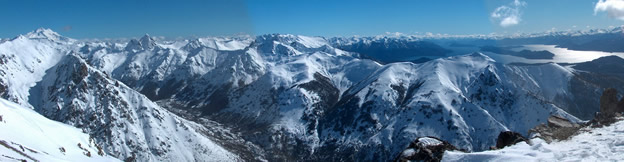

¿Por qué elegir Villa Catedral?
Alojarse a metros del Cerro Catedral
En el caso de grupos numerosos, ante la dificultad de ponerse de acuerdo, estar a metros de las pistas permite decidir individualmente los horarios. De este modo se evita el costo de múltiples traslados, que puede variar, dependiendo de la cantidad de pasajeros y de la distancia al centro de ski. Alojamientos en San Carlos de Bariloche, se encuentran a más de 20km de la base, lo que implica 30 minutos de traslado.
En el caso de grandes nevadas, que obstruyan las rutas de acceso al Centro de Ski, una manifestación, o cualquier otro inconveniente, hospedarse a metros del cerro asegura esquiar todos los días de sus vacaciones.
Cerro Catedral posee todos los servicios necesarios como:
- Escuelas de esquí
- Alquiler de equipos
- Venta/Alquiler de ropa de esquí
- Gran variedad de comercios
- Restaurantes
- Shopping
- Farmacia
- Clínica
- Destacamento policial
- Banco
Descanso y relax, al pie del Cerro Catedral
Elegir una cabaña bien equipada hace la diferencia en su estadía en Villa Catedral. Todas nuestras cabañas poseen sensores de humo, lo cual permite un uso seguro de sus hogares a leña y las protegen de incendios.
Las cabañas Aquelarre Catedral son espaciosas, cómodas para permanecer en ellas, calefaccionadas por losa radiante y hogar a leña el cual permite reunir a los visitantes en un ambiente ameno, observando la nieve tras los ventanales.
Calle Martín Jereb 146 - Villa Catedral
Bariloche - Patagonia Argentina
Email: info@aquelarrecatedral.com.ar
Tel: (0223) 155-635273